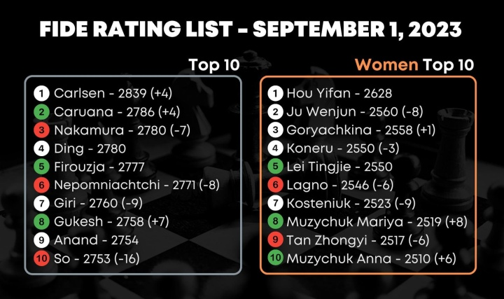

About Chess
Chess is a timeless and captivating game that has enthralled people for centuries. In this section, we delve into the essence of chess, from its fundamental rules to its fascinating history.
The Basics of Chess :
Chess is played on a square board divided into 64 squares of alternating colors. Two players, each with 16 pieces, face off in a strategic battle. The game revolves around the movement and interaction of six types of pieces: King, Queen, Rook, Bishop, Knight, and Pawn. Each piece has its unique moves and powers, making chess a game of infinite possibilities.
Chess Pieces and rules :
Understanding the roles and rules of each chess piece is essential. The King ♚ is your most precious piece, and its safety is paramount. The Queen ♛ is a formidable force, capable of moving in any direction. Rooks ♜ and Bishops ♝ control the board with their unique patterns, while Knights ♞ have their distinctive L-shaped jumps. Pawns ♟, though limited in their initial moves, can transform into powerful pieces upon reaching the opponent's back rank. The goal? To checkmate your opponent's King, putting it in a position where it cannot escape capture.
A Historical Perspective :
Chess has a rich and storied history that spans over a thousand years. It traces its origins to India, where it was known as "Chaturanga," a game of strategy played in the 6th century. Over time, chess spread across the world, evolving into the modern game we know today. It became a symbol of intellectual prowess, a beloved pastime, and even a subject of artistic and literary exploration. The history of chess is a journey through the cultures and minds that have shaped this timeless pursuit.
The Origins of Chess :
The exact origins of chess are shrouded in the mists of time, but its evolution can be traced through ancient manuscripts and historical accounts. From the battlefields of India to the courts of Persian kings, chess made its way through the Silk Road, reaching Europe in the 9th century. Along the way, it absorbed the influences of diverse cultures, transforming into the game we know today. The story of chess is not just a journey through history; it's a reflection of human intellect and creativity.
Chess Tournaments: Systems, Formats, and Ratings :
Chess tournaments come in various formats, each with its own unique characteristics. Understanding these formats, along with the Elo rating system and FIDE, is essential for chess enthusiasts.
Tournament Formats:
Chess tournaments can be broadly categorized into three main formats: Rapid, Blitz, and Classic chess.
Rapid Chess: In Rapid chess, players typically have more time than in Blitz but less than in Classic chess. Each player usually has around 15-30 minutes per game.
Blitz Chess: Blitz chess is the fastest-paced, with each player having just 3-5 minutes for the entire game, often with a 2-3 second increment per move.
Classic Chess: Classic chess is the most traditional format, where players usually have over an hour for each game.
Elo Rating System :
The Elo rating system is used to assess the relative skill levels of chess players. It assigns a numerical rating to each player based on their performance in rated games. Players gain or lose Elo points based on their results against opponents, helping to gauge their strength accurately.

FIDE (Fédération Internationale des Échecs):
FIDE is the international governing body of chess, responsible for organizing international chess events, including the Chess Olympiad and World Chess Championship. FIDE also oversees the rating system, ensuring its uniform application worldwide.
Understanding these elements is crucial for anyone looking to navigate the diverse world of chess tournaments and become part of the global chess community.